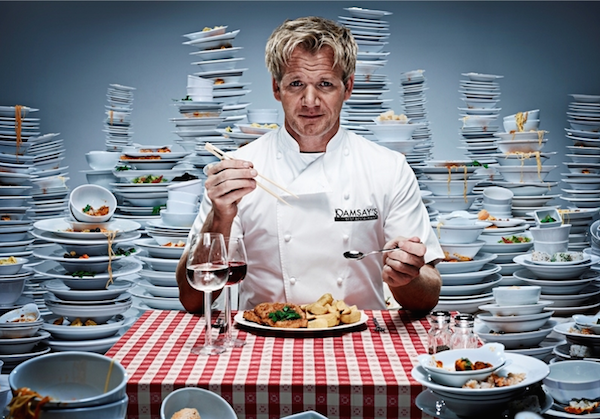
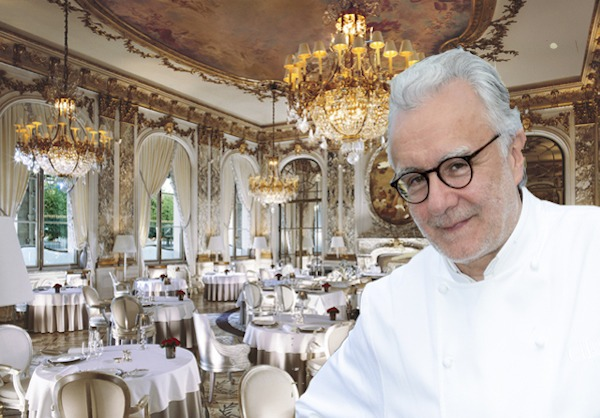

Luk Bessone

Author and presenter of famous culinary programs "Infernal Cuisine",
"Master Chef", "Boiling Point", "Nightmares in Ramsay's Kitchen".
In addition to television career Ramzi owns 10 restaurants and 3 bars in England,
12 restaurants in other countries.
Alain Delone

Alain Ducasse went from an assistant in the kitchen of one of the hotels in Bordeaux to the chef.
He is not only the most famous specialist in Provencal cuisine, but also a successful restaurateur.
Establishments of this chef are in Tokyo, Monaco, Paris, New York, Beirut, St. Petersburg.
Wolfgang Mozart
The chef with Austrian roots became famous for his unusual look at the recipe for cooking.
He owns more than 20 restaurants in the US, Japan and Canada, several culinary brands,
including Cut, a network of fast food Wolfgang Puck Express.
His original sandwiches are sold in all major airports of the world.